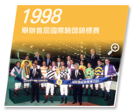

馬會概況
目標--使命與核心價值
行政架構
賽馬及馬場娛樂
會員會所
有節制體育博彩及六合彩獎券
慈善事物
馬會體育及社區發展
獎項及榮譽
模擬賽馬開獎結果
成為會員
簡介
會員卡簽賬權
會員優惠
Young Menbers
會員迎新
遵守事項
駕駛及泊車指南
設施指南
會籍狀態及表格章程
常見問題
電話指南
社區貢獻及慈善
青年發展
長者服務
體育康樂
藝術文化
教育培訓
醫療衛生
復康服務
家庭服務
環境保護
扶貧救急
馬會知多少
重要里程
香港賽馬博物館
130週年活動回顧
年報
環境可持續發展
馬會知多少
歷史及業務報告
重要里程
香港賽馬博物館
130週年活動回顧
年報
環境可持續發展
重要里程
字型
馬會成立多年，一直為社會及經濟作出重大貢獻，成為香港發展不可或缺的一部分。以下涵蓋馬會成立以來的多個重要里程。

1846
1873
1884
1915
1931
1950
1957
1959
1960
1969
1970
1971
1972
1973
1974
1975
1977
1978
1980
1981
1982
1983
1985
1988
1989
1991
1993
1994
1995
1996
1998
1999
2000
2001
2002
2003
2004
2005
2006
2007
2008
2009
2010
2011
2012
2013
2014
2015
馬會發展
世界級賽馬成就
馬會慈善貢獻
企業社會責任


{kind=link}
{kind=link}
{kind=link}
{kind=link}
{kind=link}
{kind=link}
{kind=link}
{kind=link}
{kind=link}
{kind=link}
{kind=link}
{kind=link}
{kind=link}
{kind=link}
{kind=link}
{kind=link}
{kind=link}
{kind=link}
{kind=link}
{kind=link}
{kind=link}
{kind=link}
{kind=link}
{kind=link}
{kind=link}
{kind=link}
{kind=link}
{kind=link}
{kind=link}
{kind=link}
{kind=link}
{kind=link}
{kind=link}
{kind=link}
{kind=link}
{kind=link}
{kind=link}
{kind=link}
{kind=link}
{kind=link}
{kind=link}
{kind=link}
{kind=link}
{kind=link}
{kind=link}
{kind=link}
{kind=link}
{kind=link}
{kind=link}
{kind=link}
{kind=link}
{kind=link}
{kind=link}
{kind=link}
{kind=link}
{kind=link}
{kind=link}
{kind=link}
{kind=link}
{kind=link}
{kind=link}
{kind=link}
{kind=link}